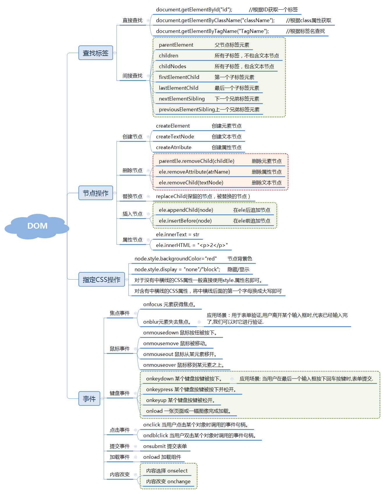

引言
网页和用户之间的交互，网页的动态效果。
一、JavaScrip总结
[TOC]
完整的JavaScript由语言基础，BOM和DOM组成。
●ES语法：ECMAScript.主要版本ES5和ES6
●DOM：文档对象模型（Document Object Model），是W3C组织推荐的处理可扩展标志语言的标准编程接口。
●BOM：浏览器对象模型（Browser Object Model），提供了独立于内容的、可以与浏览器窗口进行互动的对象结构；且由多个对象组成，其中代表浏览器窗口的Window对象是BOM的顶层对象，其他对象都是该对象的子对象。
1、语法
1.1 引用方式
1) 行间式：存在于行间事件中
1 | <body id="body"onload="body.style.backgroundColor='#Off'"> |
2) 内联式：存在于页面Script标签中
1 | <script> |
3) 外联式
1 | <script src="https://cdn.bootcss.com/jquery/3.4.1/jquery.min.js"></script> |
1.2 变量声明
变量名的定义
- JavaScript的变量名可以使用_，数字，字母，$组成，不能以数字开头。
- 声明变量使用 var 变量名; 的格式来进行声明
注意：
变量名是区分大小写的。
推荐使用驼峰式命名规则。
保留字不能用做变量名。
补充：
ES6新增const用来声明常量。一旦声明，其值就不能改变。
ECMA6 中添加了新的关键字，可以命令局部作用域
JavaScript不区分整型和浮点型，就只有一种数字类型 。还有一种NaN，表示不是一个数字（Not a Number），NaN表示当前转换的对象不是一个数字，但是他是数值类型
1.3 字符串操作
| 方法 | 说明 |
|---|---|
| .length | 返回长度 |
| .trim() | 移除空白 |
| .trimLeft() | 移除左边的空白 |
| .trimRight() | 移除右边的空白 |
| .charAt(n) | 返回第n个字符 |
| .concat(value, …) | 拼接（一般用+来进行字符串） |
| .indexOf(substring, start) | 子序列位置 |
| .substring(from, to) | 根据索引获取子序列 |
| .slice(start, end) | 切片 |
| .toLowerCase() | 小写 |
| .toUpperCase() | 大写 |
| .split(delimiter, limit) | 分割 |
slice和substring的特点：
string.slice(start, stop)和string.substring(start, stop)：
两者的相同点：
如果start等于end，返回空字符串
如果stop参数省略，则取到字符串末
如果某个参数超过string的长度，这个参数会被替换为string的长度
substirng()的特点： 如果 start > stop ，start和stop将被交换 如果参数是负数或者不是数字，将会被0替换
silce()的特点：
如果 start > stop 不会交换两者
如果start小于0，则切割从字符串末尾往前数的第abs(start)个的字符开始(包括该位置的字符)
如果stop小于0，则切割在从字符串末尾往前数的第abs(stop)个字符结束(不包含该位置字符)
null和undefined区别：
- null表示值是空，一般在需要指定或清空一个变量时才会使用，如 name=null;
- undefined表示当声明一个变量但未初始化时，该变量的默认值是undefined。还有就是函数无明确的返回值时，返回的也是undefined。
null表示变量的值是空(null可以手动清空一个变量的值，使得该变量变为object类型，值为null)，undefined则表示只声明了变量，但还没有赋值
Number转换为字符串的时候有默认模式和基模式两种
//默认模式：十进制
str.toString();
//基模式：二进制，八进制和十六进制
str.toString(2); //8|16
1.4 数组操作
数组对象的作用是：使用单独的变量名来存储一系列的值。
| 方法 | 说明 |
|---|---|
| .length | 数组的大小 |
| .push(ele) | 尾部追加元素 |
| .pop() | 获取尾部的元素 |
| .unshift(ele) | 头部插入元素 |
| .shift() | 头部移除元素 |
| .slice(start, end) | 切片 |
| .reverse() | 反转 |
| .join(seq) | 将数组元素连接成字符串 |
| .concat(val, …) | 连接数组 |
| .sort()0 | 排序 |
| .forEach() | 将数组的每个元素传递给回调函数 |
| .splice() | 删除元素，并向数组添加新元素。 |
| .map() | 返回一个数组元素调用函数处理后的值的新数组 |
1.5 查看数据类型
typeof是一个一元运算符（就像++，–，！，- 等一元运算符），不是一个函数，也不是一个语句。
对变量或值调用 typeof 运算符将返回下列值之一：
- undefined - 如果变量是 Undefined 类型的
- boolean - 如果变量是 Boolean 类型的
- number - 如果变量是 Number 类型的
- string - 如果变量是 String 类型的
- object - 如果变量是一种引用类型或 Null 类型的
:balance_scale:字符串转换为数字：内置函数parseInt()和parseFloat()，但是只会转换字符串中数字部分，出现非数字部分终止转换。
Number()和parseInt()的区别：Number()转换包含非数字时，会返回NaN。
:gem:转换为Boolean：内置函数Boolean()
当转换字符串时：
非空即为true
当转换数字时：
非0即为true
当转换对象时：
非null即为true
1.6 内置对象和方法
JavaScript的对象（Object）本质上是键值对的集合（Hash结构），但是只能用字符串作为键。
1 | var a = {"name": "MLXG", "age": 18}; |
Date对象
1 | //方法1：不指定参数 |
Date对象的方法
1 | var d = new Date(); |
JSON对象
1 | var str1 = '{"name": "Faker","age":18}'; |
正则表达式
1 | //定义正则表达式两种方式 |
:jack_o_lantern::jack_o_lantern::jack_o_lantern:
1.7 JavaScript自定义对象
1.7.1 通过new Object创建对象
1 | <!DOCTYPE html> |
1.7.2 工厂模式：通过function设计一个对象
1 | <!-- |
1.7.3 为已存在的对象，增加新的方法
1 | <!-- |
1.7.4 对象字面量
1 | <!DOCTYPE html> |
2、BOM
BOM即浏览器对象模型（Browser Object Model）
浏览器对象包括：
2.1 Window(窗口)
所有浏览器都支持 window 对象。它表示浏览器窗口。
如果文档包含框架（frame 或 iframe 标签），浏览器会为 HTML 文档创建一个 window 对象，并为每个框架创建一个额外的 window 对象。
所有 JavaScript 全局对象、函数以及变量均自动成为 window 对象的成员。
全局变量是 window 对象的属性。全局函数是window对象的方法
- window.innerHeight - 浏览器窗口的内部高度
- window.innerWidth - 浏览器窗口的内部宽度
- window.open() - 打开新窗口
- window.close() - 关闭当前窗口
2.2 Navigator(浏览器)
浏览器对象，通过这个对象可以判定用户所使用的浏览器，包含了浏览器相关信息。
navigator.appName // Web浏览器全称 navigator.appVersion // Web浏览器厂商和版本的详细字符串 navigator.userAgent // 客户端绝大部分信息 navigator.platform // 浏览器运行所在的操作
2.3 Screen(客户端屏幕)
screen对象表示用户的屏幕相关信息
screen.width; //用户的屏幕分辨率
screen.availWidth; //可用区域大小
2.4 History(访问历史)
history用于记录访问历史
history.forward() // 前进一页
history.back() // 后退一页
history.go(-2) //上上一页
2.5 Location(浏览器地址)
window.location 对象用于获得当前页面的地址 (URL)，并把浏览器重定向到新的页面。
location.href 获取URL
location.href=”URL” // 跳转到指定页面
location.reload() 重新加载页面
:seat::seat::seat::seat::seat:
2.6 弹出框
浏览器上常见的弹出框有警告框，确认框，提示框 这些都是通过调用window的方法实现的。
| 关键字 | 简介 | 用法 |
|---|---|---|
| alert | 警告框 | 常用于消息提示，比如注册成功等等 |
| confirm | 确认框 | 常用于危险性操作的确认提示。 比如删除一条记录的时候，弹出确认框 |
2.7 计时器
| 关键字 | 简介 |
|---|---|
| setTimeout | 只执行一次 |
| setInterval | 不停地重复执行函数s，etInterval(函数名, 重复执行的时间间隔毫秒数 ); |
| clearInterval | 终止重复执行 |
| document.write() | 不要在setInterval调用的函数中使用document.write(); |
3、DOM
DOM(Document Object Model)是一套对文档的内容进行抽象和概念化的方法。
当网页被加载时，浏览器会创建页面的文档对象模型，HTML DOM模型被构造为对象的树。
HTML文档树

DOM标准规定HTML文档中的每个成分都是一个节点(node)：
- 文档节点(document对象)：代表整个文档
- 元素节点(element 对象)：代表一个元素（标签）
- 文本节点(text对象)：代表元素（标签）中的文本
- 属性节点(attribute对象)：代表一个属性，元素（标签）才有属性
- 注释是注释节点(comment对象)
